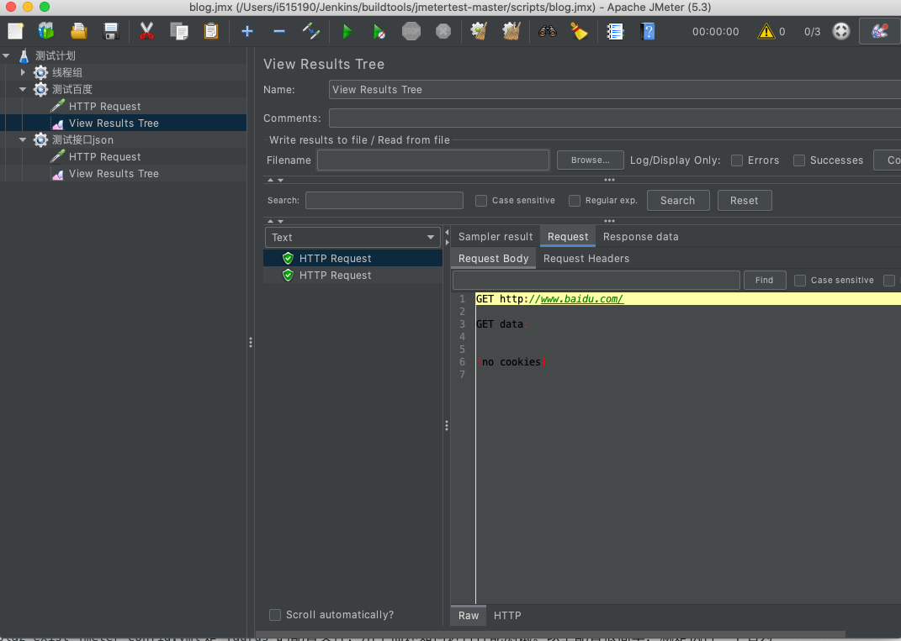
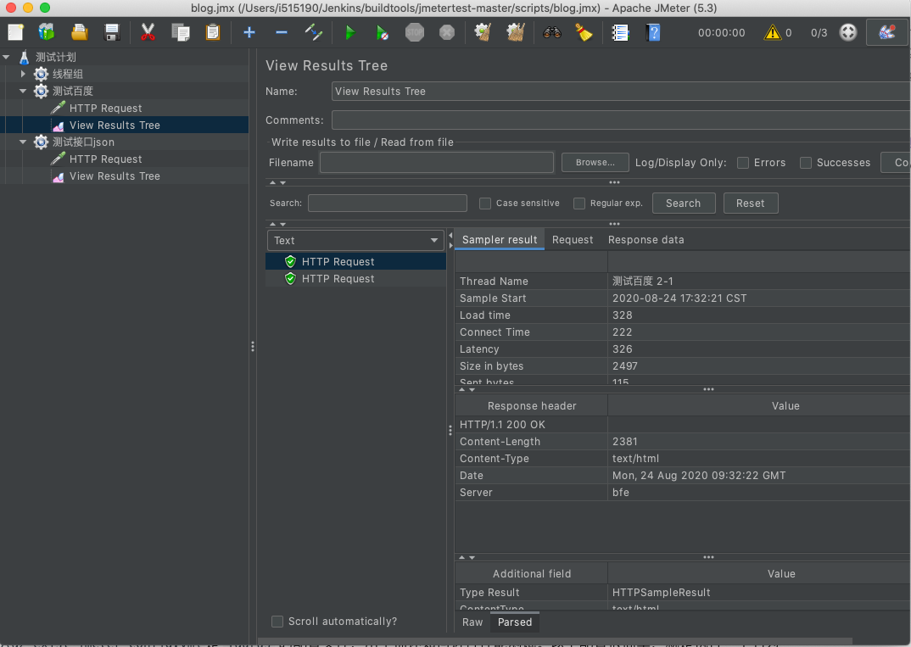
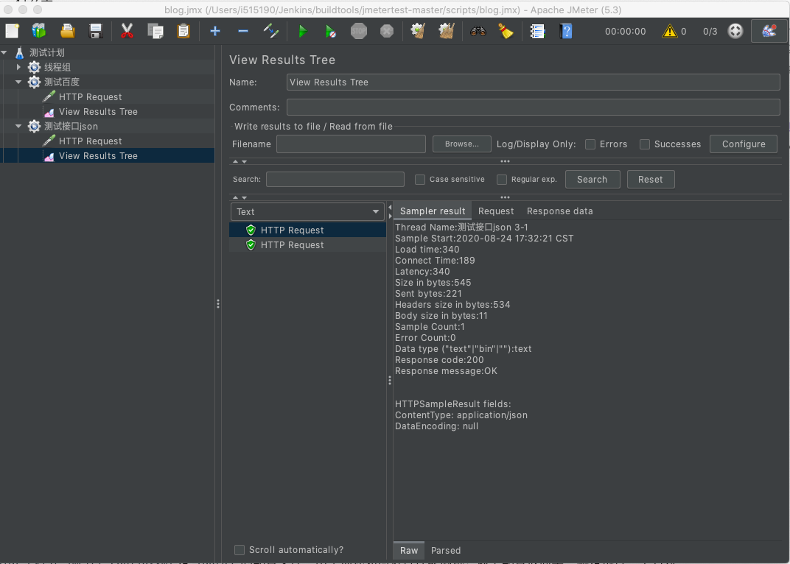
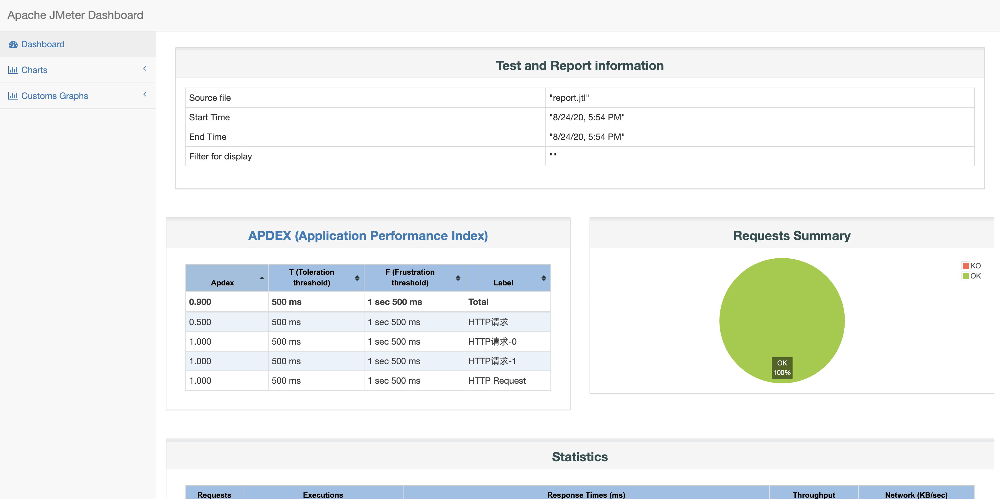
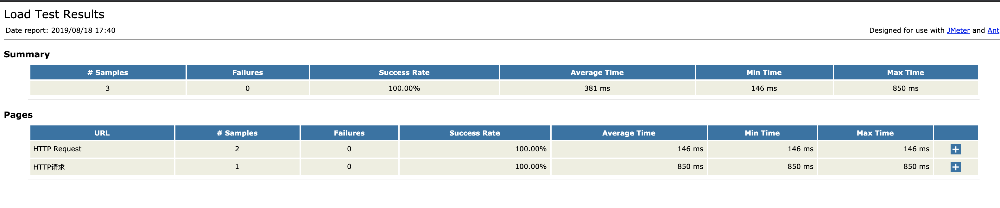
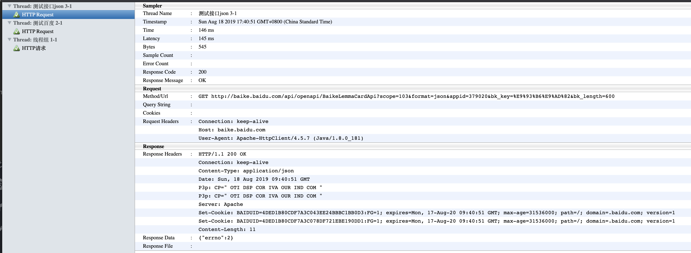

第一节 Jmeter & Ant 自动化测试
1、Jmeter 接口测试生成报告
1-1 接口
- 接口测试定义为一种软件测试类型，用于验证两个不同软件系统之间的通信是否正确完成。
- 集成两个组件的连接称为接口。计算机世界中的此接口可以是API，Web服务等之类的东西。这些连接服务或接口的测试称为接口测试。
- 接口实际上是由一组命令，消息和其他允许设备与用户之间进行通信的属性组成的软件。
1-2 安装 jmeter
- wget
- tar zxf
- export
- source
Mac 安装
brew install jmeter
brew upgrade jmeter
Intall Java11 on mac
brew tap homebrew/cask-versions
brew cask install java11
brew cask install java11
Updating Homebrew...
==> Downloading https://download.oracle.com/java/GA/jdk11/9/GPL/openjdk-11.0.2_osx-x64_bin.tar.gz
######################################################################## 100.0%
==> Verifying SHA-256 checksum for Cask 'java11'.
==> Installing Cask java11
==> Moving Generic Artifact 'jdk-11.0.2.jdk' to '/Library/Java/JavaVirtualMachines/openjdk-11.0.2.jdk'.
Password:
🍺 java11 was successfully installed!
$ sudo vim .bash_profile
export JAVA_11_HOME=$(/usr/libexec/java_home -v11)
alias java11='export JAVA_HOME=$JAVA_11_HOME'
java11
source .bash_profile
$ java -version
openjdk version "11.0.2" 2019-01-15
OpenJDK Runtime Environment 18.9 (build 11.0.2+9)
OpenJDK 64-Bit Server VM 18.9 (build 11.0.2+9, mixed mode)
jmeter

导入blog.jmx
Run the script: 测试百度

Run the script: 测试接口

Centos 安装
$ wget https://downloads.apache.org//jmeter/binaries/apache-jmeter-5.3.tgz
$ sudo tar zxf apache-jmeter-5.3.tgz -C /opt/
$ sudo vim /etc/profile.d/jmeter.sh
export JMETER_HOME=/opt/apache-jmeter-5.3
export PATH=$JMETER_HOME/bin:$PATH
$ sudo chmod +x /etc/profile.d/jmeter.sh
source /etc/profile.d/jmeter.sh
$ jmeter --help
OpenJDK 64-Bit Server VM warning: If the number of processors is expected to increase from one, then you should configure the number of parallel GC threads appropriately using -XX:ParallelGCThreads=N
_ ____ _ ____ _ _ _____ _ __ __ _____ _____ _____ ____
/ \ | _ \ / \ / ___| | | | ____| | | \/ | ____|_ _| ____| _ \
/ _ \ | |_) / _ \| | | |_| | _| _ | | |\/| | _| | | | _| | |_) |
/ ___ \| __/ ___ \ |___| _ | |___ | |_| | | | | |___ | | | |___| _ <
/_/ \_\_| /_/ \_\____|_| |_|_____| \___/|_| |_|_____| |_| |_____|_| \_\ 5.3
Copyright (c) 1999-2020 The Apache Software Foundation
To list all command line options, open a command prompt and type:
jmeter.bat(Windows)/jmeter.sh(Linux) -?
--------------------------------------------------
To run Apache JMeter in GUI mode, open a command prompt and type:
jmeter.bat(Windows)/jmeter.sh(Linux) [-p property-file]
--------------------------------------------------
To run Apache JMeter in NON_GUI mode:
Open a command prompt (or Unix shell) and type:
jmeter.bat(Windows)/jmeter.sh(Linux) -n -t test-file [-p property-file] [-l results-file] [-j log-file]
--------------------------------------------------
To run Apache JMeter in NON_GUI mode and generate a report at end :
Open a command prompt (or Unix shell) and type:
jmeter.bat(Windows)/jmeter.sh(Linux) -n -t test-file [-p property-file] [-l results-file] [-j log-file] -e -o [Path to output folder]
--------------------------------------------------
To generate a Report from existing CSV file:
Open a command prompt (or Unix shell) and type:
jmeter.bat(Windows)/jmeter.sh(Linux) -g [csv results file] -o [path to output folder (empty or not existing)]
--------------------------------------------------
To tell Apache JMeter to use a proxy server:
Open a command prompt and type:
jmeter.bat(Windows)/jmeter.sh(Linux) -H [your.proxy.server] -P [your proxy server port]
---------------------------------------------------
To run Apache JMeter in server mode:
Open a command prompt and type:
jmeter-server.bat(Windows)/jmeter-server(Linux)
---------------------------------------------------
1-2 运行测试用例
jmeter -n -t scripts/blog.jmx -l report.jtl -e -o report -Jjmeter.save.saveservice.output_format=csv
参数说明:
- -n: 非GUI模式执行JMeter
- -t: 执行测试文件所在的位置
- -l: 指定生成测试结果的保存文件，jtl文件格式
- -e: 测试结束后，生成测试报告
- -o: 指定测试报告的存放位置
看下运行的效果：测试报告已生成是HTML文件，可直接打开。
$ jmeter -n -t scripts/blog.jmx -l report.jtl -e -o report -Jjmeter.save.saveservice.output_format=csv
WARNING: package sun.awt.X11 not in java.desktop
Creating summariser <summary>
Created the tree successfully using scripts/blog.jmx
Starting standalone test @ Mon Aug 24 17:54:51 CST 2020 (1598262891834)
Waiting for possible Shutdown/StopTestNow/HeapDump/ThreadDump message on port 4445
Warning: Nashorn engine is planned to be removed from a future JDK release
summary = 3 in 00:00:01 = 4.7/s Avg: 363 Min: 286 Max: 512 Err: 0 (0.00%)
Tidying up ... @ Mon Aug 24 17:54:52 CST 2020 (1598262892778)
... end of run
$ tree report -L 1
report
├── content
├── index.html
├── sbadmin2-1.0.7
└── statistics.json
2 directories, 2 files

2、使用 Ant、Jmeter 自动化测试
2-1 复制ant-jmeter-1.1.1.jar
cp /opt/apache-jmeter-5.3/extras/ant-jmeter-1.1.1.jar /opt/ant/lib
将 ${apache-jmeter}/extras 文件夹下的‘ant-jmeter-1.1.1.jar’文件复制到${apache-ant-}\lib 文件夹下
cd /home/vagrant/tools/script/jmetertest-master
sudo cp jmeter.results.shanhe.me.xsl /opt/apache-jmeter-5.3/extras/
我们可以使用ant与Jmeter集成build.xml部分内容 build.xml地址
<?xml version="1.0" encoding="utf8"?>
<!-- 拷贝报告所需的图片资源至目标目录 -->
<project name="ant-jmeter-test" default="run" basedir=".">
<tstamp>
<format property="time" pattern="yyyyMMddHHmm" />
</tstamp>
<!-- 需要改成自己本地的jmeter目录-->
<property name="jmeter.home" value="/opt/apache-jmeter-5.3" />
<!-- jmeter生成的jtl格式的结果报告的路径-->
<property name="jmeter.result.jtl.dir" value="./result/jtlfile" />
<!-- jmeter生成的html格式的结果报告的路径-->
<property name="jmeter.result.html.dir" value="./result/htmlfile" />
<!-- ʺ生成的报告的前缀-->
<property name="ReportName" value="TestReport_" />
<property name="jmeter.result.jtlName" value="${jmeter.result.jtl.dir}/${ReportName}${time}.jtl" />
<property name="jmeter.result.htmlName" value="${jmeter.result.html.dir}/SummaryReport.html" />
<property name="jmeter.detail.result.jtlName" value="${jmeter.result.jtl.dir}/${ReportName}${time}.jtl" />
<property name="jmeter.detail.result.htmlName" value="${jmeter.result.html.dir}/DetailReport.html" />
<target name="run">
<antcall target="test" />
<antcall target="report" />
</target>
<target name="test">
<taskdef name="jmeter" classname="org.programmerplanet.ant.taskdefs.jmeter.JMeterTask" />
<jmeter jmeterhome="${jmeter.home}" resultlog="${jmeter.result.jtlName}">
<!-- 声明要运行的脚本“*.jmx”指包含此目录下的所有jmeter脚本-->
<testplans dir="./scripts" includes="*.jmx" />
<property name="jmeter.save.saveservice.output_format" value="xml"/>
</jmeter>
</target>
<path id="xslt.classpath">
<fileset dir="${jmeter.home}/lib" includes="xalan*.jar"/>
<fileset dir="${jmeter.home}/lib" includes="serializer*.jar"/>
</path>
<target name="report">
<tstamp>
<format property="report.datestamp" pattern="yyyy/MM/dd HH:mm" />
</tstamp>
<xslt
classpathref="xslt.classpath"
force="true"
in="${jmeter.detail.result.jtlName}"
out="${jmeter.detail.result.htmlName}"
style="./jmeter.results.shanhe.me.xsl">
<param name="dateReport" expression="${report.datestamp}"/>
</xslt>
<xslt
classpathref="xslt.classpath"
force="true"
in="${jmeter.result.jtlName}"
out="${jmeter.result.htmlName}"
style="./jmeter-results-detail-report_21.xsl">
<param name="dateReport" expression="${report.datestamp}"/>
</xslt>
<!-- 拷贝报告所需的图片资源至目标目录 -->
<copy todir="${jmeter.result.html.dir}">
<fileset dir="${jmeter.home}/extras">
<include name="collapse.png" />
<include name="expand.png" />
</fileset>
</copy>
</target>
</project>
2-2 ant构建jmeter 测试
运行用例
$ sudo ant -f build.xml
Buildfile: /home/vagrant/tools/script/jmetertest-master/build.xml
run:
test:
[jmeter] Executing test plan: /home/vagrant/tools/script/jmetertest-master/scripts/blog.jmx ==> /home/vagrant/tools/script/jmetertest-master/result/jtlfile/TestReport_202008210635.jtl
[jmeter] Creating summariser <summary>
[jmeter] Created the tree successfully using /home/vagrant/tools/script/jmetertest-master/scripts/blog.jmx
[jmeter] Starting standalone test @ Fri Aug 21 06:35:38 UTC 2020 (1597991738273)
[jmeter] Waiting for possible Shutdown/StopTestNow/HeapDump/ThreadDump message on port 4445
[jmeter] summary = 3 in 00:00:01 = 3.0/s Avg: 518 Min: 338 Max: 752 Err: 0 (0.00%)
[jmeter] Tidying up ... @ Fri Aug 21 06:35:39 UTC 2020 (1597991739806)
[jmeter] ... end of run
report:
[xslt] Processing /home/vagrant/tools/script/jmetertest-master/result/jtlfile/TestReport_202008210635.jtl to /home/vagrant/tools/script/jmetertest-master/result/htmlfile/202008210635_DetailReport.html
[xslt] Loading stylesheet /opt/apache-jmeter-5.3/extras/jmeter.results.shanhe.me.xsl
[xslt] Processing /home/vagrant/tools/script/jmetertest-master/result/jtlfile/TestReport_202008210635.jtl to /home/vagrant/tools/script/jmetertest-master/result/htmlfile/202008210635_SummaryReport.html
[xslt] Loading stylesheet /opt/apache-jmeter-5.3/extras/jmeter-results-detail-report_21.xsl
BUILD SUCCESSFUL
Total time: 5 seconds
$ cd jmetertest-master/result/htmlfile
-rw-r--r--. 1 root root 5191 Aug 21 06:35 202008210635_SummaryReport.html
-rw-r--r--. 1 root root 16284 Aug 21 06:35 202008210635_DetailReport.html
-rw-r--r--. 1 root root 5191 Aug 21 06:28 202008210628_SummaryReport.html
-rw-r--r--. 1 root root 16284 Aug 21 06:28 202008210628_DetailReport.html
...
测试报告

